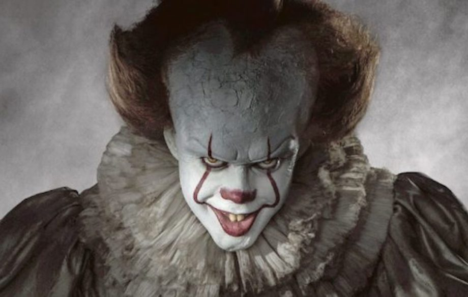
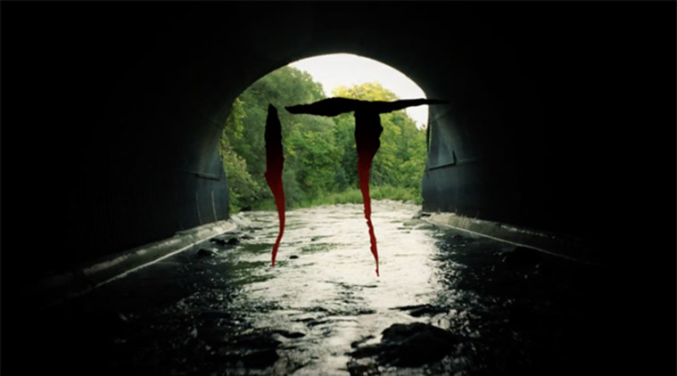

Stephen King's IT
Het is zulk extreem personage. Onmenselijk,vertelde Skarsgård,Het gaat veel verder dan een sociopaat, want hij is niet eens een mens. Hij is niet eens een clown. Ik speel gewoon een van de wezens die It maakt. It houdt van de vorm van clown Pennywise, en geniet ervan te jagen. Wat grappig is voor deze kwade entiteit is niet grappig voor anderen. Maar hij vindt het wel grappig.
Verder meldt EW dat de film zich in het heden af gaat spelen. Het oorspronkelijke verhaal van Stephen King speelt juist in de jaren 50 en jaren 80. Ditmaal vormen de jaren 80 de achtergrond voor de flashbacks die we te zien krijgen en speelt de rest van het verhaal zich in het heden af.
De film wordt geregisseerd door Andy Muschietti. It verenigt een groep van zeven kinderen, de Losers Club. Ze staan lijnrecht tegenover problemen, pestkoppen en een monster dat de vorm van clown Pennywise aanneemt. Jaren later, als ze allang uit elkaar gegroeid zijn, komen ze weer met elkaar in contact en moeten ze het opnieuw opnemen tegen Pennywise ditmaal om een definitief einde aan zijn bestaan te maken. lees meer over IT
